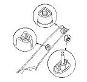
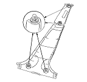

SRS Component Replacement/Inspection After Deployment
|
NOTE: Before doing any SRS repairs, use the or HDS SRS menu method to check for DTCs; refer to the DTC Troubleshooting Index for the less obvious deployed parts (seat belt tensioners, front impact sensors, side airbag sensors, etc.)
After a collision where the seat belt tensioners deployed, replace these items:
After a collision where the front airbag(s) deployed, replace these items:
After a collision where the side airbag(s) deployed, replace these items:
After a collision where the side curtain airbag(s) deployed, replace these items:
After a moderate to severe side or rear collision, inspect for any damage on the side curtain airbag or other related components. According to the degree of damage, replace components as needed.
After a collision, where a side curtain airbag has deployed, replace all trim clips on that side, even if they appear to be undamaged. Replace the clips on these parts:
During the repair process, inspect these areas:
After the vehicle is completely repaired, turn the ignition switch ON (II). If the SRS indicator comes on for about 6 seconds and then goes off, the SRS is OK. If the indicator does not function properly, use the PGM Tester or HDS SRS Menu Method to read the DTC. If you cannot retrieve a code, go to SRS Symptom Troubleshooting.
|
Front pillar

Center pillar

Rear pillar

|
|
|
|